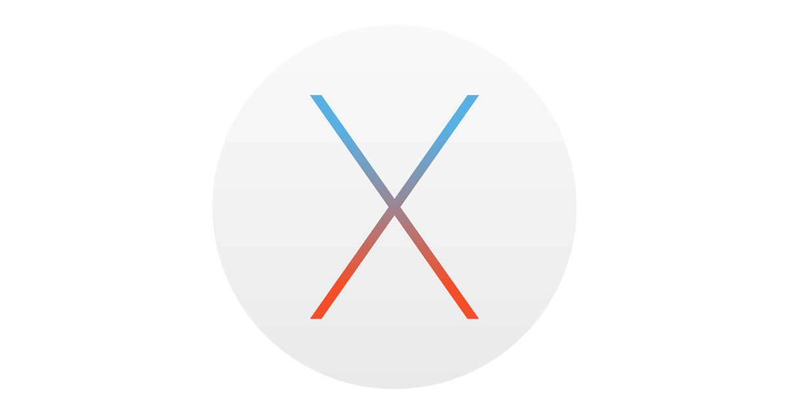
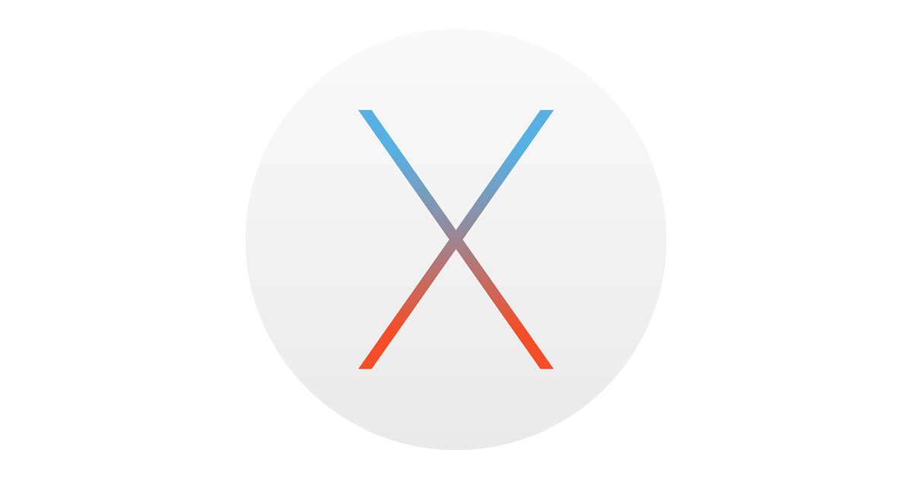
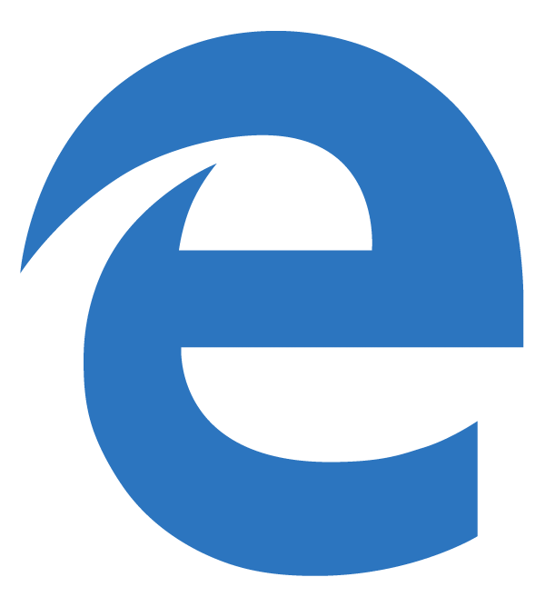
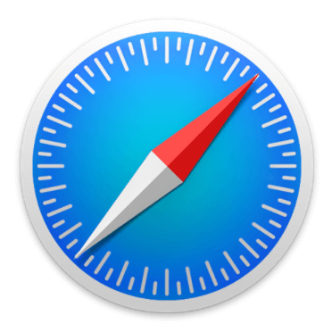
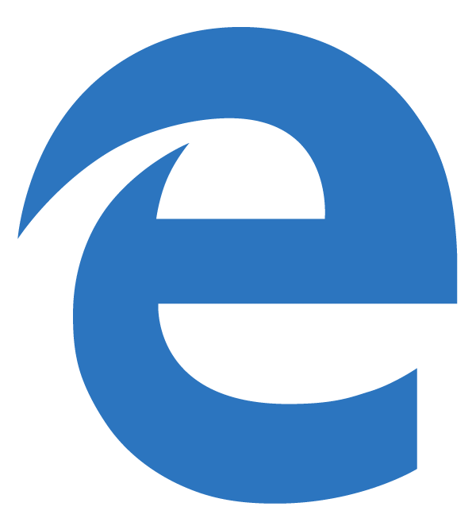
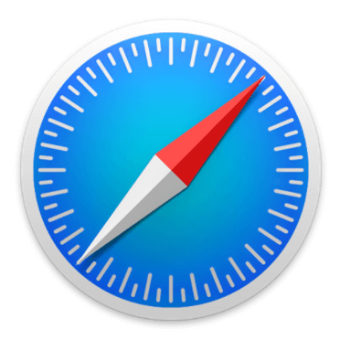

Operating System

 

Computers, phones, game systems, and even TVs all contain a central Operating System(OS). Apple products contain iOS for mobile devices and OSX for computers. Google has the Android OS that are in all Android phones. Google also has a Chrome OS for their chromebook line of laptops. Most computers will be running Microsoft Windows. All of these Operating Systems have one thing in common; they are limited in customization. The solution to this is the Linux OS. Linux is an open-source piece of software, meaning that it is completely customizable, free, and mady by the community. Because of this, many computer enthusiests are turning to Linux as their main Operating System.
Web Browser
 

In order to go on the internet, your computer needs to have a Web Browser. This is a program that allows you to access a search engine. Most people use Chrome, Internet/Edge Explorer, Firefox, or Safari. Each web browser has its own upsides and downsides. Most people will regard Google Chrome as the best web browser because it is quick, easy to use, and looks very sleek. These people also tend to regard Internet Explorer as the worst search engine because it is very slow and looks outdated. There is an advantage to Internet Explorer and the other web browsers over Google Chrome. Google Chrome uses us a lot of RAM. A content heavy user will benefit from leaving Chrome for Firefox or Edge.
Programs
Within a computer are many programs that the computer uses. Some popular examples are Photoshop, Steam, Skype, and Microsoft Office. These are usually downloaded from the internet and in the case of Photoshop and Microsoft Office, may cost money. Nevertheless, these programs are needed in order to get the best experience possible from a computer. When downloading applications from the internet, stay away from any websites that are very ad-heavy or look shady. These will tend have malware inside their files.